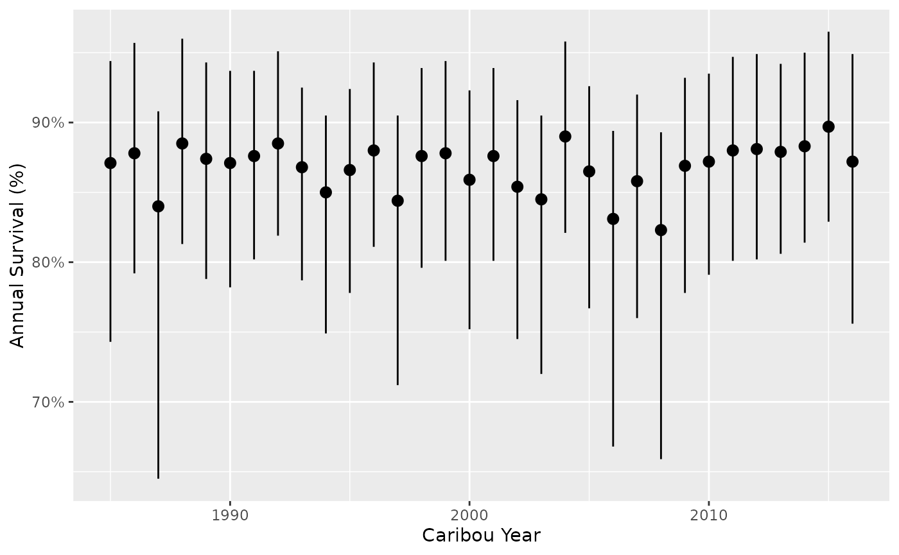
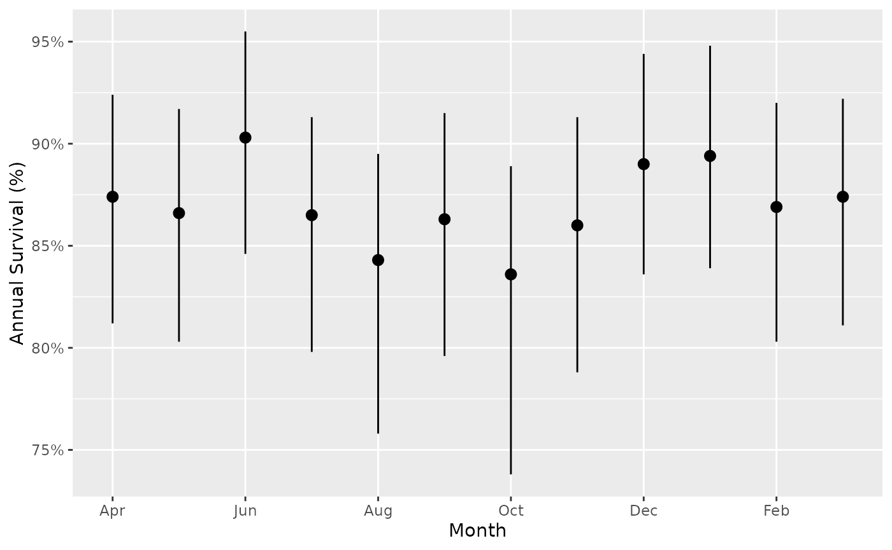
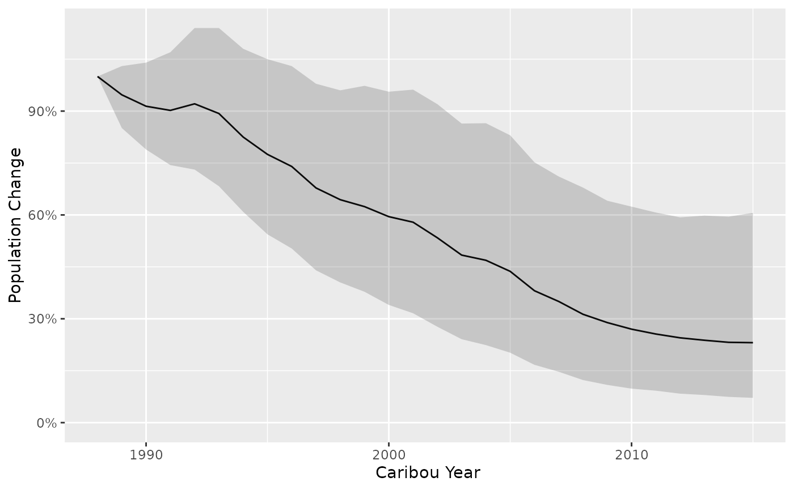

bboutools is an R package to estimate Boreal Caribou
recruitment, survival and population growth. Functions are provided to
fit Bayesian or Maximum Likelihood (ML) models and generate and plot
predictions.
Under the hood, the Nimble R package is used to fit heirarchical Bayesian and Maximum Likelihood models. Model templates in Nimble use BUGS-like syntax.
Several anonymized data sets are provided in a separate R package,
bboudata.
In order to use bboutools you need to install R (see
below) or use the Shiny app.
bboutools is intended to be used in conjunction with tidyverse packages such as
readr, dplyr to manipulate data and
ggplot2 (Wickham 2016) to
plot data. As such, it endeavors to fulfill the tidyverse manifesto.
In order to install R (R Core Team 2023) the appropriate binary for the users operating system should be downloaded from CRAN and then installed.
Once R is installed, the bboutools package can be
installed from GitHub by executing the following code at the R
console
install.packages("remotes")
remotes::install_github("poissonconsulting/bboutools")The bboutools package can then be loaded into the
current session using
To get additional information on a particular function just type
? followed by the name of the function at the R console.
For example ?bb_fit_recruitment brings up the R
documentation for the bboutools recruitment model fit
function.
For more information on using R the reader is referred to R for Data Science (Wickham and Grolemund 2016).
If you discover a bug in bboutools please file an issue
with a reprex
(reproducible example) at https://github.com/poissonconsulting/bboutools/issues.
Once the bboutools package has been loaded, the next
task is to provide some data. An easy way to do this is to create a
comma separated file (.csv) with spreadsheet software.
Recruitment and survival data should be formatted as in the following
anonymized datasets and can be checked to confirm it is in the correct
format by using the bboudata functions:
# Recruitment data
bboudata::bbd_chk_data_recruitment(bboudata::bbourecruit_a)
bboudata::bbourecruit_a
#> # A tibble: 696 × 9
#> PopulationName Year Month Day Cows Bulls UnknownAdults Yearlings Calves
#> <chr> <int> <int> <int> <int> <int> <int> <int> <int>
#> 1 A 1990 3 9 1 1 0 0 0
#> 2 A 1990 3 9 5 1 0 0 0
#> 3 A 1990 3 9 4 1 0 0 0
#> 4 A 1990 3 9 2 0 0 0 0
#> 5 A 1990 3 9 6 0 0 0 0
#> 6 A 1990 3 9 4 1 0 0 0
#> 7 A 1990 3 9 5 0 0 0 0
#> 8 A 1990 3 9 2 0 0 0 0
#> 9 A 1990 3 9 3 2 0 0 1
#> 10 A 1990 3 9 4 0 0 0 1
#> # ℹ 686 more rows
# Survival data
bboudata::bbd_chk_data_survival(bboudata::bbousurv_a)
bboudata::bbousurv_a
#> # A tibble: 364 × 6
#> PopulationName Year Month StartTotal MortalitiesCertain MortalitiesUncertain
#> <chr> <int> <int> <int> <int> <int>
#> 1 A 1986 1 0 0 0
#> 2 A 1986 2 8 0 0
#> 3 A 1986 3 8 0 0
#> 4 A 1986 4 8 0 0
#> 5 A 1986 5 8 0 0
#> 6 A 1986 6 8 0 0
#> 7 A 1986 7 8 0 0
#> 8 A 1986 8 8 0 0
#> 9 A 1986 9 8 0 0
#> 10 A 1986 10 8 0 0
#> # ℹ 354 more rowsAll columns should be included and column names should not be changed.
The .csv file can then be read into R using the
following
data <- read_csv(file = "path/to/file.csv")The annual recruitment in boreal caribou population is typically estimated from annual calf:cow ratios.
bboutools fits a Binomial recruitment model to the
annual counts of calves, cows, yearlings, unknown adults and
potentially, bulls.
It is up to the user to ensure that the data are from surveys that were conducted at the same time of year, when calf survival is expected to be similar to adult survival.
The function bb_fit_recruitment() fits a Bayesian
recruitment model.
The start month of the biological year (i.e., ‘caribou year’) can be
set with the year_start argument. By default, the start
month is April. Data are aggregated by biological year (not calendar
year) prior to model fitting.
The adult female proportion can either be fixed or estimated from
counts of cows and bulls (i.e.,
Cows ~ Binomial(adult_female_proportion, Cows + Bulls)).
If the user provides a value to adult_female_proportion,
it is fixed. The default value is 0.65, which accounts for higher
mortality of males (Smith 2004). If
adult_female_proportion = NULL, the adult female proportion
is estimated from the data (i.e.,
Cows ~ Binomial(adult_female_proportion, Cows + Bulls)). By
default, a biologically informative prior of Beta(65,35) is
used. This corresponds to an expected value of 65%.
The yearling female proportion can be set with
yearling_female_proportion. The default value is 0.5.
The model can be fit with random effect of year, fixed effect of year
and/or continuous effect of year (i.e., year trend). The
min_random_year argument dictates the minimum number of
years in the dataset required to fit a random year effect; otherwise a
fixed year effect is fit. It is not recommended to fit a random year
effect with fewer than 5 years. A continuous fixed effect of year can be
fit with year_trend = TRUE.
The user can set quiet = FALSE argument to see messages
and sampling progress.
recruitment <- bb_fit_recruitment(bboudata::bbourecruit_a, year_start = 4, year_trend = TRUE, quiet = TRUE)Model convergence can be checked with the glance()
function.
glance(recruitment)
#> # A tibble: 1 × 8
#> n K nchains niters nthin ess rhat converged
#> <int> <int> <int> <int> <dbl> <int> <dbl> <lgl>
#> 1 27 4 3 1000 10 993 1.00 TRUEModel convergence provides an indication of whether the parameter estimates are reliable.
Convergence is considered successful if ess > 33% of
the number of iterations and rhat < 1.1.
ess (Effective Sample Size) represents the length of a
chain (i.e., number of iterations) if each sample was independent of the
one before it. rhat evaluates whether the chains agree on
the same values. As the total variance of all the chains shrinks to the
average variance within chains, r-hat approaches 1.
By default, the bboutools Bayesian method saves 1,000
MCMC samples from each of three chains (after discarding the first
halves). The number of samples saved can be adjusted with the
niters argument. With niters set, the user can
simply increment the thinning rate as required to achieve convergence
(i.e., by increasing ess and/or decreasing
rhat).
Various generic functions in bboutools can be used to
summarize or interrogate the output of model fitting functions.
coef() and tidy() provide a tidy table of
the coefficient estimates.estimates() provides a list of the coefficient
estimates.augment() provides the data used.model_code() provides the model code in BUGS-like
syntax.plot() provides traceplots for individual
parameters.The user can exclude individual random effect estimates from coefficient output.
tidy(recruitment, include_random_effects = FALSE)
#> # A tibble: 3 × 4
#> term estimate lower upper
#> <term> <dbl> <dbl> <dbl>
#> 1 b0 -1.46 -1.63 -1.29
#> 2 bYear -0.0979 -0.258 0.0696
#> 3 sAnnual 0.326 0.188 0.517Keep in mind that any reference to ‘Year’ or ‘Annual’ in these summary outputs represent the caribou year, which can be set by the user within the fitting functions.
In general, weakly informative priors are used by default (Gelman, Simpson, and Betancourt 2017; McElreath
2016). The default prior distribution parameter values can be
accessed from bb_priors_recruitment() and
bb_priors_survival(). See the priors vignette for more
information.
bb_priors_recruitment()
#> b0_mu b0_sd
#> -1 5
#> bYear_mu bYear_sd
#> 0 2
#> bAnnual_sd sAnnual_rate
#> 5 1
#> adult_female_proportion_alpha adult_female_proportion_beta
#> 65 35The default prior distribution for adult_female_proportion is
Beta(65, 35) and the default prior distribution for the
intercept (b0) is Normal(-1.5, 1), which is on
the log scale. The user can change the priors by providing a named
vector to the priors argument in the model fitting
functions. The names must match one of the names in
bb_priors_recruitment().
For example, less informative priors for
adult_female_proportion (e.g., Beta(1, 1)) and
b0 (e.g., Normal(0, 5)) can be supplied as
follows.
recruitment <- bb_fit_recruitment(bboudata::bbourecruit_a, priors = c(adult_female_proportion_alpha = 1, adult_female_proportion_beta = 1, b0_mu = 0, b0_sd = 5))If the user is interested in fitting models without any prior
information, see bb_fit_recruitment_ml() and
bb_fit_survival_ml(), which use a Maximum Likelihood
approach (see more details below).
The annual survival in boreal caribou population is typically
estimated from the monthly fates of collared adult females.
bboutools fits a Binomial monthly survival model to the
number of collared females and mortalities. The user can choose whether
to include individuals with uncertain fates with the certain
mortalities.
The function bb_fit_survival() fits a Bayesian survival
model.
The survival model is always fit with a random intercept for each
month. Otherwise, the year_start, year_trend,
and min_random_year arguments have the same behaviour as
bb_fit_recruitment() above.
If include_uncertain_mortalities = TRUE, the total
mortalities is the sum of the certain mortalities and uncertain
mortalities (‘MortalitiesCertain’ and ‘MortalitiesUncertain’ columns);
otherwise, only certain mortalities are used to fit the model.
survival <- bb_fit_survival(bboudata::bbousurv_a, year_start = 4, quiet = TRUE)
tidy(survival, include_random_effects = FALSE)
#> # A tibble: 3 × 4
#> term estimate lower upper
#> <term> <dbl> <dbl> <dbl>
#> 1 b0 4.46 4.16 4.8
#> 2 sAnnual 0.327 0.0325 0.675
#> 3 sMonth 0.278 0.0608 0.669A user can generate and plot predictions of recruitment, survival and population growth.
Recruitment is the adjusted recruitment using methods from (DeCesare et al. 2012). See the ‘analytical methods’ article for details.
Predictions of calf-cow ratio can also be made using
bb_predict_calf_cow_ratio().
predict_recruitment <- bb_predict_recruitment(recruitment, year = TRUE)
bb_plot_year_recruitment(predict_recruitment)
predict_recruitment_1 <- bb_predict_recruitment(recruitment, year = FALSE)
predict_recruitment_1
#> # A tibble: 1 × 6
#> PopulationName CaribouYear Month estimate lower upper
#> <chr> <int> <int> <dbl> <dbl> <dbl>
#> 1 A NA NA 0.0862 0.0758 0.0976
predict_recruitment_trend <- bb_predict_recruitment_trend(recruitment)
bb_plot_year_trend_recruitment(predict_recruitment_trend)
predict_survival <- bb_predict_survival(survival, year = TRUE, month = FALSE)
bb_plot_year_survival(predict_survival)
The estimates show annual survival, i.e., if that month lasted the duration of the year.
predict_survival_month <- bb_predict_survival(survival, year = FALSE, month = TRUE)
bb_plot_month_survival(predict_survival_month)
A user can predict population growth (lambda) with
bb_predict_growth(). The survival and recruitment models
fit in the previous steps are used as input. It is important to ensure
that survival and recruitment outputs share the same biological year
(i.e., ‘caribou year’), which is set with the year_start
argument in bb_fir_survival() and
bb_fit_recruitment(). Details on how lambda is calculated
can be found in the analytical methods vignette.
predict_lambda <- bb_predict_growth(survival = survival, recruitment = recruitment)
bb_plot_year_growth(predict_lambda) +
ggplot2::scale_y_continuous(labels = scales::percent)
#> Scale for y is already present.
#> Adding another scale for y, which will replace the existing scale.Population change (%) is calculated with uncertainty as the cumulative product of population growth.
predict_change <- bb_predict_population_change(survival = survival, recruitment = recruitment)
bb_plot_year_population_change(predict_change)
Maximum Likelihood (ML) models can be fit using the
bb_fit_recruitment_ml() and
bb_fit_survival_ml() functions. These functions take a few
seconds to execute because Nimble must compile the model into C++ code.
See the Nimble
documentation for more information and comparison to TMB. Similar to
Bayesian model fits, generic functions (e.g., tidy(),
glance() and augment()) work on ML fit objects
(class ‘bboufit_ml’).
recruitment_ml <- bb_fit_recruitment_ml(bboudata::bbourecruit_a, year_start = 4, year_trend = TRUE, quiet = TRUE)
glance(recruitment_ml)
#> # A tibble: 1 × 4
#> n K loglik converged
#> <int> <int> <dbl> <lgl>
#> 1 27 2 -90.1 TRUE
survival_ml <- bb_fit_survival_ml(bboudata::bbousurv_a, year_start = 4, quiet = TRUE)The ML estimates are comparable to estimates derived from the equivalent Bayesian models above. In general, ML models can be interpreted as Bayesian models with uninformative (e.g., uniform) priors (McElreath 2016).
tidy(recruitment_ml, include_random_effects = FALSE)
#> # A tibble: 2 × 4
#> term estimate lower upper
#> <chr> <dbl> <dbl> <dbl>
#> 1 b0 -1.43 -1.53 -1.33
#> 2 bYear -0.112 -0.211 -0.0128
tidy(survival_ml, include_random_effects = FALSE)
#> # A tibble: 3 × 4
#> term estimate lower upper
#> <chr> <dbl> <dbl> <dbl>
#> 1 b0 4.45 4.16 4.75
#> 2 sAnnual 0.335 0.102 1.1
#> 3 sMonth 0.24 0.0728 0.789There is functionality in bboutools to generate
predictions (i.e., derived parameters) from ML models. However, there is
no functionality to get confidence intervals on predictions. This is a
more straightforward task with Bayesian models.
bb_predict_survival(survival_ml)
#> # A tibble: 32 × 6
#> PopulationName CaribouYear Month estimate lower upper
#> <chr> <int> <int> <dbl> <dbl> <dbl>
#> 1 A 1985 NA 0.873 NA NA
#> 2 A 1986 NA 0.883 NA NA
#> 3 A 1987 NA 0.83 NA NA
#> 4 A 1988 NA 0.89 NA NA
#> 5 A 1989 NA 0.875 NA NA
#> 6 A 1990 NA 0.871 NA NA
#> 7 A 1991 NA 0.878 NA NA
#> 8 A 1992 NA 0.891 NA NA
#> 9 A 1993 NA 0.868 NA NA
#> 10 A 1994 NA 0.842 NA NA
#> # ℹ 22 more rows
growth <- bb_predict_growth(survival_ml, recruitment_ml)
bb_plot_year_growth(growth)Note that ML models can struggle to converge when there are sparse
data, especially with a fixed year effect. If these issues arise, the
user can try estimating year as a random effect, continuous effect
(year_trend), excluding year altogether (i.e., with
exclude_year = TRUE), or fitting a Bayesian model.
Another possible source of convergence issues is initial values. By
default, bboutools sets initial values based on the default
priors used for parameters in the Bayesian models. The user can replace
initial values for parameters using inits.
inits_ml <- bb_fit_recruitment_ml(bboudata::bbourecruit_a, inits = c(b0 = 1, sAnnual = 0.3))bboufit objects
The bb_fit_survival() and
bb_fit_recruitment() functions use a Bayesian approach and
return objects that inherit from class bboufit.
Objects of class bboufit have four elements:
model - the compiled Nimble model as created by
nimble::nimbleModel().model_code - the model code in text format.samples - the MCMC samples generated
fromnimble::runMCMC() converted to an object of class
mcmcr.data - the survival or recruitment data provided.These are the raw materials for any further exploration or analysis.
For example, view trace and density plots with
plot(fit$samples).
See mcmcr
and mcmcderive
for working with mcmcr objects, or convert samples to an
object of class mcmc.list, e,g, with
coda::as.mcmc.list for working with the coda R package.
The bb_fit_survival_ml() and
bb_fit_recruitment_ml() functions use a Maximum Likelihood
approach and return objects that inherit from class
bboufit_ml.
Objects of class bboufit_ml have five elements:
model - the Nimble model as created by
nimble::nimbleModel().model_code - the model code in text format.mle - the Maximum Likelihood output as created by
model$findMLE().summary - the summary of the Maximum Likelihood output
as created by model$summary(mle).data - the survival or recruitment data provided.See nimble for how to work with nimble model objects and Maximum Likelihood output.